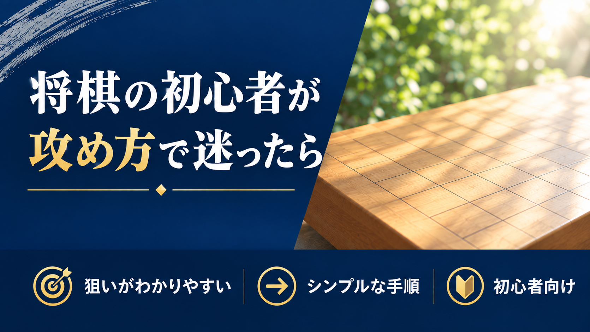

将棋の初心者が攻め方で迷ったら

将棋のルールを覚えたばかりの人が次にぶつかる壁は、「駒の動かし方はわかるのに、どう攻めていいかわからない」というものです。
この記事では、初心者が攻め方を身につけていく上での考え方と、実際に取り組みやすい戦法として棒銀を紹介します。
将棋の初心者は、まず何から始めればいいか
ルールを覚えたばかりの段階では、「囲い」「攻め方」「詰将棋」など覚えることがたくさんあって、何から手をつけていいか迷う人も多いと思います。
結論から言うと、最初に優先すべきは攻め方です。囲いは形が決まっているので後から覚えても間に合いますが、攻め方は「自分から動く力」なので、これがないと対局そのものが進みません。攻め方の型を1つ持っているだけで、対局の見え方が大きく変わります。
攻め方は、本や動画で「型」を先に知っておくと身につきやすい
攻め方の感覚は、対局を数多くこなすだけでも少しずつ身につきますが、初心者のうちは入門書や解説動画で先に「型」を知っておいた方が、上達のスピードが上がります。
理由は、駒がぶつかった局面で「次にどう攻めるべきか」を一から自分で考えるのは、初心者にとってはかなり負荷が高いからです。先に型を知っておけば、対局中は「覚えた型に当てはめられないか」を考えるだけで済み、判断がぐっと楽になります。
初心者が最初に取り組む戦法としては、棒銀が一番のおすすめです。狙いがわかりやすく、攻めの手順もシンプルなので、「攻め方の考え方」そのものを学ぶ教材として最も向いています。棒銀の本や動画で一通り手順を覚えたら、実戦で使ってみて、そこで感じた疑問をまた本や動画に戻って確認する、という繰り返しが効果的です。
実際、私自身も将棋を覚えたばかりの頃、最初に取り組んだのが棒銀でした。当時の学校の友達は棒銀の受け方まで知らなかったので、棒銀を覚えてからは対局で勝ちまくれるようになったのを覚えています。狙いがはっきりしている分、覚えたことがそのまま結果につながりやすい戦法だと思います。
戦法を自由に選べるようになるのは、この「型を1つ知っている」状態を経てからで十分です。まずは棒銀で、攻め方の基本的な考え方を体に染み込ませることを優先しましょう。
棒銀とは、銀を一直線に押し出して攻める戦法
棒銀は、居飛車（飛車を動かさない戦型）の中でも代表的な定跡の一つです。名前の通り、銀を棒のようにまっすぐ前に押し出して、相手の陣地に攻め込みます。
棒銀の駒組みは、大まかに次のような流れで進みます（相手の対応によって変化するため、あくまで基本形です）。
- 飛車先の歩を突く
- 銀を飛車の前まで進め、歩・銀・飛車が縦に並ぶ形を作る
- ２筋を歩、銀、飛車を使って攻めを開始する
この一連の流れが「銀をまっすぐ棒のように進める」動きに見えることから、棒銀と呼ばれています。文章だけだとイメージしにくいので、実際の駒の動きは動画で確認しましょう。
参考動画: 【将棋】棒銀の攻め方と手筋 初心者が強くなるには？【戦法 定跡講座】
初心者が攻め方を上達させるコツ
棒銀のような型を覚えたあとは、次のことを意識すると上達が早くなります。
- 覚えた型を実戦で何度も使ってみる（1回使っただけでは身につきません）
- 対局が終わったら振り返り（感想戦）をして、うまくいかなかった場面を見直す
覚えた型は、実戦で繰り返し使い込む必要があります。
攻め方と並行して、終盤力をつけるために詰将棋にも取り組んでおくと、対局全体の勝率がさらに上がっていきます。
まずは棒銀を覚えて、強くなりましょう。
攻め方に迷ったら、レッスンで一緒に確認しましょう。まずは無料体験からお試しください。
無料体験を申し込む日々の詰将棋はXで発信しています。@tsume_shodan をフォロー →